Instalaciones & Espacios
Un ambiente seguro, colorido y estimulante diseñado para que cada niño aprenda, juegue y crezca.
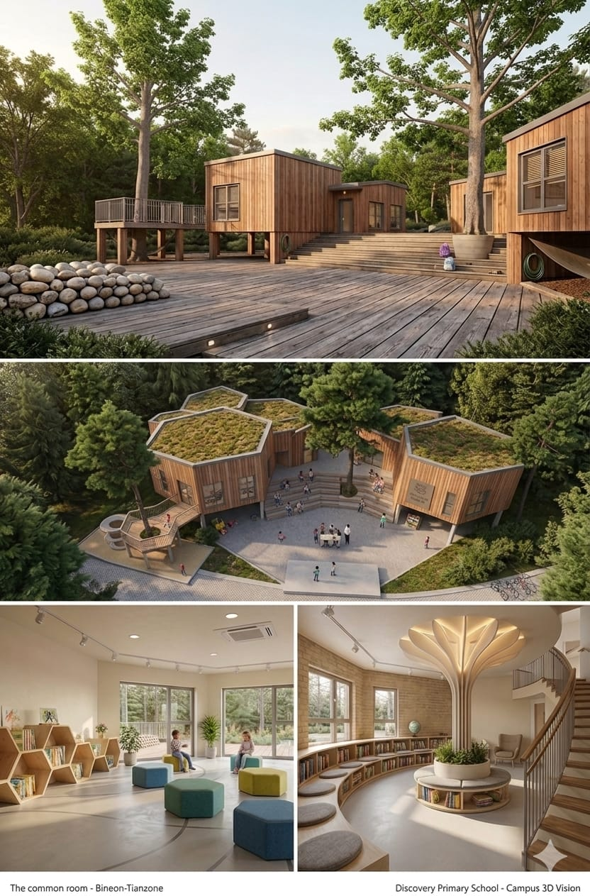
imagenes/aulas.jpg
Aulas equipadas
6 salones amplios, ventilados y con mobiliario adecuado a cada edad, diseñados para favorecer la concentración y el aprendizaje activo.
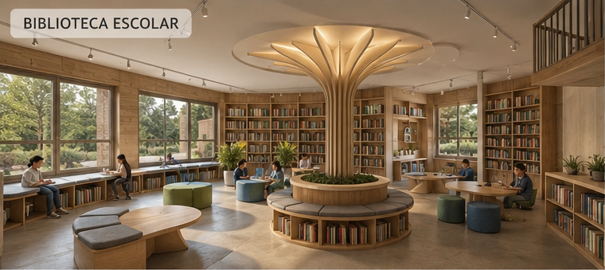
imagenes/biblioteca.jpg
Biblioteca escolar
Un espacio de lectura tranquilo con acervo bibliográfico actualizado, rincones de lectura y materiales didácticos para todos los grados.
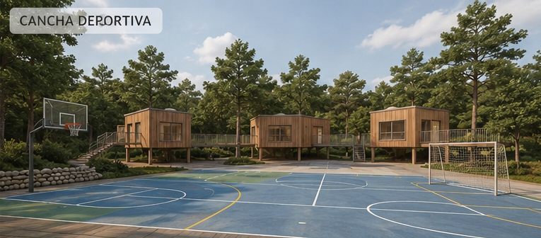
imagenes/cancha.jpg
Cancha deportiva
Área multiusos para educación física, recreo y actividades deportivas. Espacio seguro con piso adecuado y delimitaciones para distintos juegos.
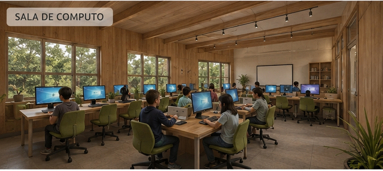
imagenes/computo.jpg
Sala de cómputo
Equipada con computadoras e internet para que los alumnos desarrollen habilidades digitales desde temprana edad de manera guiada y segura.
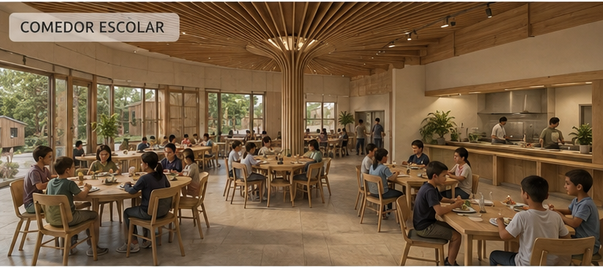
imagenes/comedor.jpg
Comedor escolar
Área de alimentación limpia y ordenada donde los alumnos pueden disfrutar su receso con higiene y comodidad.
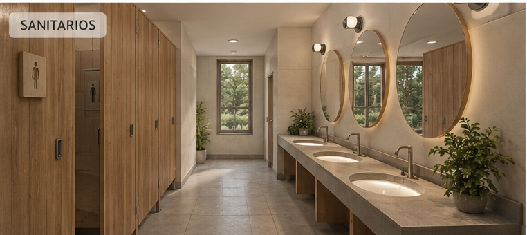
imagenes/sanitarios.jpg
Sanitarios
Baños separados por género, limpios y en buen estado, con acceso adecuado para niños de todas las edades y con supervisión regular.
Los talleres son espacios de aprendizaje experiencial donde los alumnos desarrollan habilidades creativas, técnicas y sociales más allá del aula.
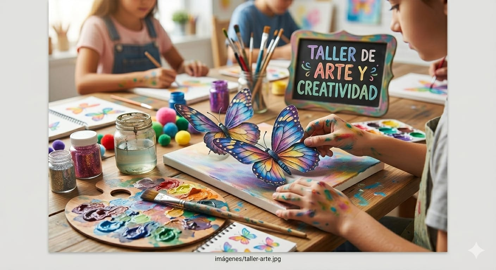
Espacio para desarrollar la imaginación, la expresión artística y la creatividad mediante pintura, dibujo, música y actividades manuales.
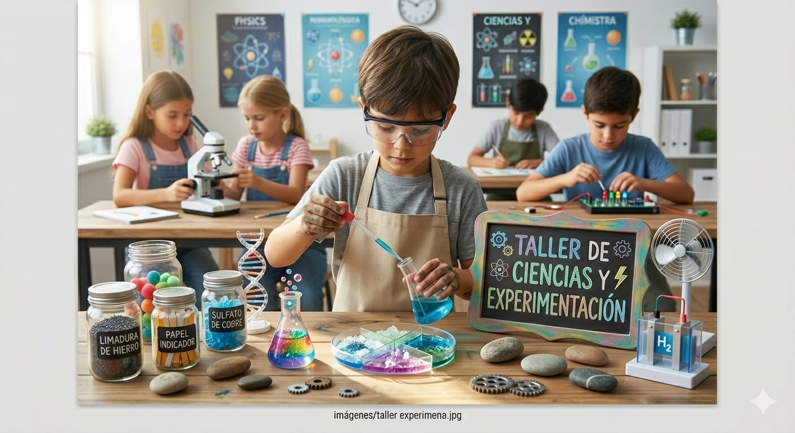
Actividades enfocadas en la observación, exploración y comprensión del entorno natural mediante experiencias prácticas.
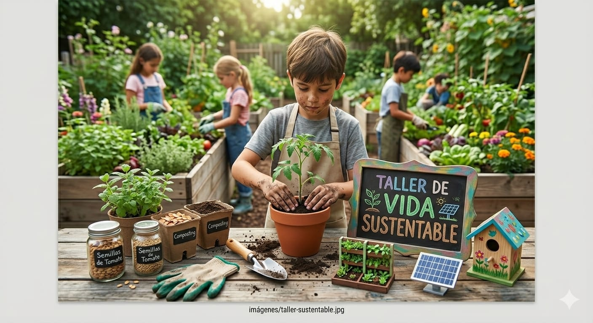
Proyectos y actividades relacionadas con el cuidado del medio ambiente y la conciencia ecológica.
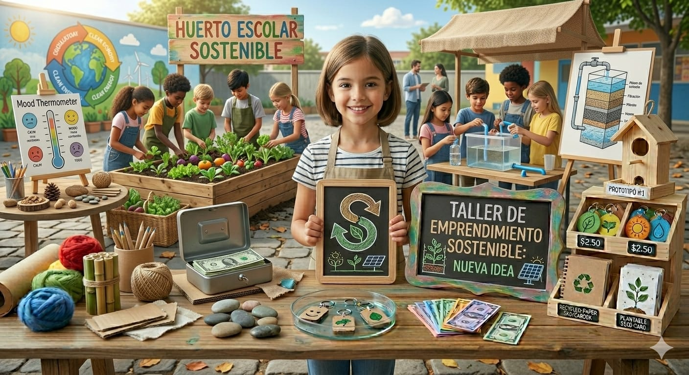
Experiencias que fortalecen la autonomía, la toma de decisiones y el trabajo colaborativo.
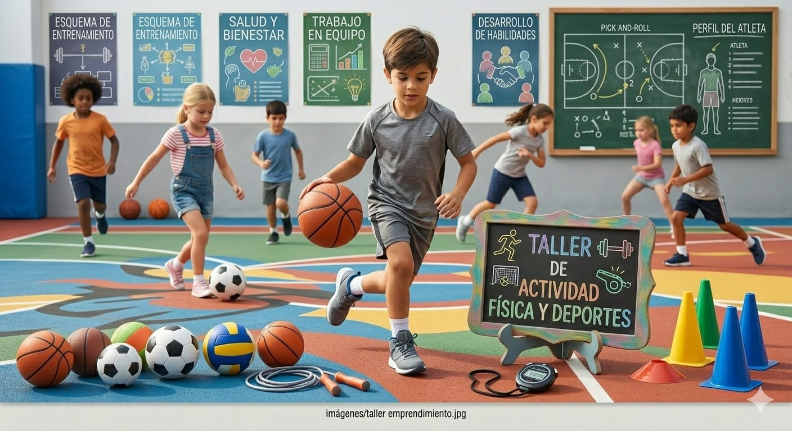
Promovemos hábitos saludables mediante actividades deportivas y recreativas en un ambiente participativo e inclusivo.
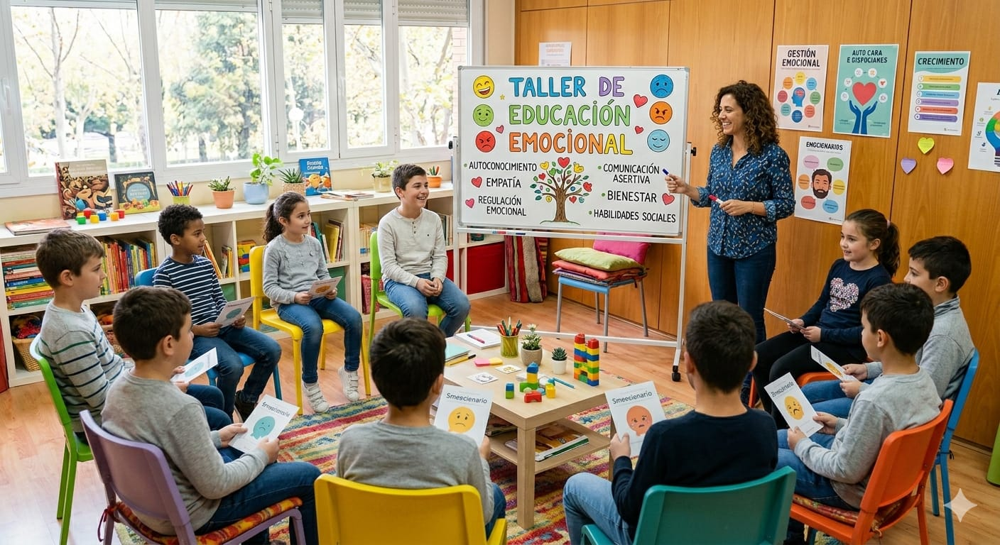
Actividades diseñadas para fortalecer el reconocimiento, manejo y expresión de emociones.
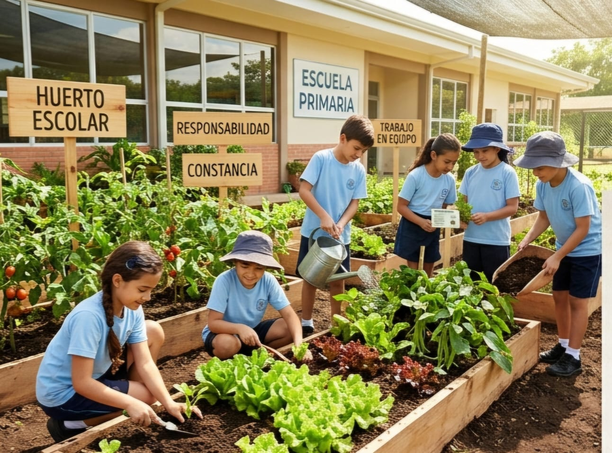
Huerto Escolar
"Semillas de Futuro"
El huerto escolar es un espacio de aprendizaje activo y significativo donde los estudiantes participan directamente en el cuidado y mantenimiento de áreas de cultivo. Su finalidad es acercar a los alumnos a experiencias reales relacionadas con la naturaleza, la sustentabilidad y el trabajo colaborativo, favoreciendo el aprendizaje mediante la práctica y la observación.
Los niños observan el ciclo de vida de las plantas y comprenden su relación con el medio ambiente.
Aprenden a valorar los alimentos que consumen y la importancia de comer verduras y frutas frescas.
Cada grupo cuida su parcela del huerto, fomentando la disciplina, el compromiso y el trabajo colaborativo.
Practicamos composta, ahorro de agua y reciclaje integrando la sustentabilidad en el día a día escolar.


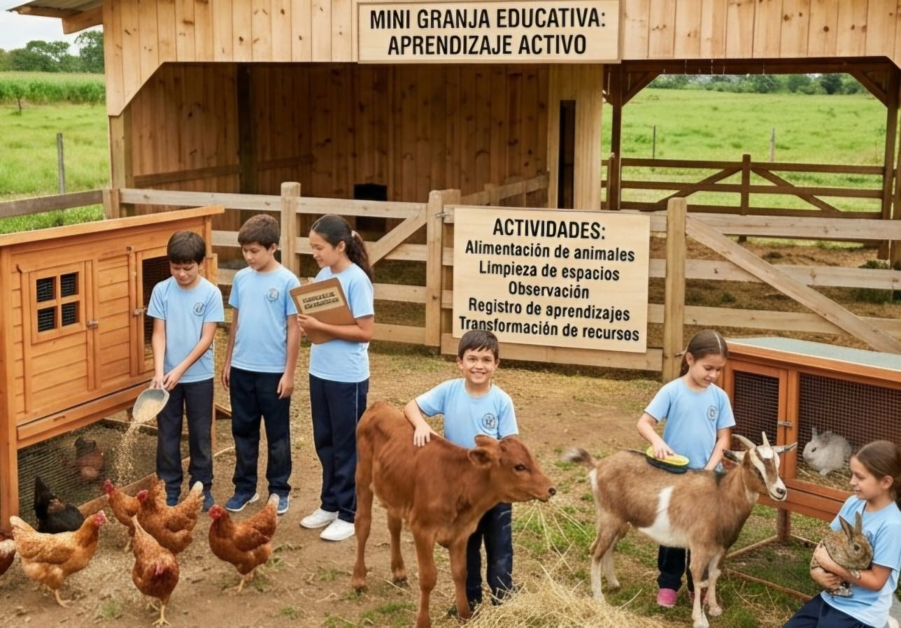
Mini Granja
"Amigos del Campo"
Uno de los elementos que distingue a nuestra institución es la mini granja educativa, un espacio pedagógico innovador y vivencial donde los estudiantes aprenden mediante el contacto directo con los animales y el entorno natural.
Al cuidar a los animales los niños desarrollan sensibilidad, respeto por la vida y vínculos afectivos positivos.
Aprenden de dónde vienen los alimentos, cómo viven los animales y cuál es su papel en el ecosistema rural.
Cada grupo tiene turnos de cuidado y alimentación, fomentando la cooperación y la responsabilidad compartida.
La granja se conecta con contenidos de ciencias naturales, biología y educación ambiental de forma práctica.


Los alumnos exploran y reconocen sus emociones a través de actividades guiadas de inteligencia emocional.
Cada alumno investiga y presenta una profesión u oficio, fomentando el conocimiento del mundo laboral y las vocaciones.
Salidas al entorno natural para plantar árboles y conocer ecosistemas locales, conectando con el medio ambiente.
Recorridos en comunidad que promueven el ejercicio, la convivencia familiar y el cuidado de la salud física.
Exposición de obras creadas por los alumnos: pinturas, esculturas, manualidades y proyectos de arte durante el ciclo.
Evento recreativo donde familias y alumnos participan juntos en retos, juegos y actividades de integración.
Temporada de cosecha y degustación de los productos del huerto. Los alumnos presentan sus cultivos a la comunidad.
Los estudiantes diseñan y presentan experimentos científicos, desarrollando pensamiento crítico e investigación.
Actividad nocturna o al amanecer para explorar astronomía, constelaciones y el universo de manera vivencial.
Proyección de películas con valores educativos bajo las estrellas. Una noche especial para toda la familia.
Festivales, convivencias, días temáticos y eventos que fortalecen la identidad y el sentido de pertenencia escolar.